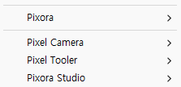

Tracefolio REPORTS & ISSUES
Tracefolio REPORTS & ISSUES기존 메뉴가 남은 사용자 화면 재점검
검증 대기사용자 화면의 기존 4개 메뉴를 확인했습니다. 소스와 생성 DLL은 새 메뉴이며 실제 표시 반영 원인은 아직 미확인입니다.
작업 결과
앞선 정리는 소스 변경과 별도 컴파일까지였으며 사용자 화면 반영은 확인하지 못했습니다. 현재 사용자 캡처를 실제 실패 근거로 보존합니다.
변경 내용
적용 내용
검증 도구가 예전 Pixora/Studio·Pixel Camera/Open 메뉴를 호출하던 누락을 새 세 모듈 경로로 수정했습니다. 식생 Version.json에 남은 Pixel Tooler 제품군도 Pixora Studio로 수정했습니다.

검증
현재 C:/Projects/TurnRoom 소스의 모듈 메뉴는 Pixora Studio/Image Maker·Pixel Camera·Foliage 세 개입니다. Library/ScriptAssemblies의 실제 DLL 문자열도 이 경로이며 구형 메뉴 속성 소스는 발견되지 않았습니다. Pixora.Editor.dll 갱신은21:16:33 KST로 앞선20:56 보고 이후입니다.
실행 중 TurnRoom PID23120의 프로젝트 경로와 실제 제목을 읽기 전용으로 확인했습니다. 기존 개발 호스트의 snapshot도21:19:27 KST 응답했고 씬 보존=true였습니다. 이는 메뉴가 새로 표시된 증거가 아닙니다. 새 도메인의 전체 MenuItem 메타데이터를 기록하는 읽기 전용 개발 진단을 추가했으나 자동 컴파일/로드가 아직 확인되지 않아 미실행입니다. 창 열기·포커스 전환·재시작·강제 Refresh는 하지 않았습니다.
정적 VerifyStudio 검사는 통과했습니다. 재발 교훈은 기존 전역의 설치·실행·검증 구분 규칙에 이미 있으므로 전역 변경 없음.
남은 사항
실제 메뉴 등록 목록과 사용자 화면의 일치 검증이 남아 있습니다. 원인은 미확인입니다. 새 진단 요청은 종료 전 제거하여 나중에 자동 실행되지 않게 합니다. 재시작이나 캐시 삭제로 추측성 복구하지 않았습니다.
작업 시간
- 제안 시간: 5–10분
- 실제로 완료된 시간: 2026-11-04 21:16:45 KST 시작。21:22:43 KST까지 약6분간 소스·생성 DLL·실행 호스트 대조 및 누락 수정. 실제 메뉴 표시 해결 완료 시각은 없음. 공개 배포 확인은 채팅에 기록.
- XERJ: 실패 — Status: XERJ node is not running. rg 및 실제 DLL 문자열과 실행 호스트 응답으로 대조.